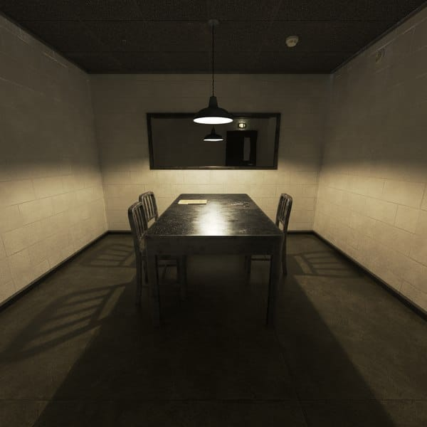

Noa subió el video sin pensarlo demasiado. En segundos ya estaba en las redes, aunque intentábamos calmar nuestra respiración, sabíamos que no había vuelta atrás, en cuestión de minutos el video se había hecho viral. Miles de personas lo estaban compartiendo, los comentarios se multiplicaban cada segundo, y pronto llegó a los noticieros. Todos estaban hablando del hijo del concejal Virlante y de lo que había hecho.
Pero la fama no nos duró mucho. Esa misma noche nos empezaron a llegar mensajes: “Ustedes dos no saben con quién se metieron, tengan cuidado” “Es demasiado tarde para borrarlo”.
Para no estar solas Noa vino a mi casa a dormir unos días, pero esos días notamos un auto negro con los vidrios polarizados frente a mi casa, es un auto que nunca había visto antes. El mismo estaba ahí cada vez que mirábamos por la ventana.
Noa me decía que todo iba a estar bien, que era nuestra oportunidad de hacer justicia. Yo, en cambio, sentía algo más grande y peligroso que se nos venía encima.
De repente, golpearon la puerta, nos quedamos en silencio, ninguna quería abrir, escuchamos una voz “soy el policía Nicolas Laurent”. -Yo lo conozco, él es el amigo de mi hermano- me dijo Noa- nos miramos y fuimos a abrir.
-Hola señoritas, soy el policía Nicolas Laurent, vi el video que publicaron, quería saber si denunciaron lo que han visto-
-Aun no lo hacemos- le contestamos
-Y… ¿tienen pensado hacerlo?–
-Si oficial, por supuesto-
Nos llevó hasta la comisaria, al llegar nos hizo pasa a una sala pequeña, donde había una mesa metálica y dos sillas de cada lado. Saco una libreta y empezó a preguntar:
-Bien, necesito que me digan sus nombres completos y sus edades-
Le contestamos casi al mismo tiempo, nerviosas. El rápidamente anotó y levantó la vista.
- ¿Dónde estaban exactamente cuando ocurrió el hecho?
-En la esquina de San Martin y Rivadavia- respondí, todavía con la imagen grabada en mi mente.
- ¿Quién grabo el video? - pregunto Laurent mirando fijamente a Noa.
- Fui yo… -admitió, bajando la voz.
Laurent hizo una pequeña pausa y su tono se volvió más serio:
- ¿Recibieron algún tipo de amenaza después de subirlo? –
Asentí despacio.
-Si… un mensaje de un número desconocido. Decía que no sabíamos con quién nos estábamos metiendo y que era tarde para borrar le video.
-Necesito que confíen en mí. Esto es más grande de lo que creen.
Confiar en el No confiar en el Atrás